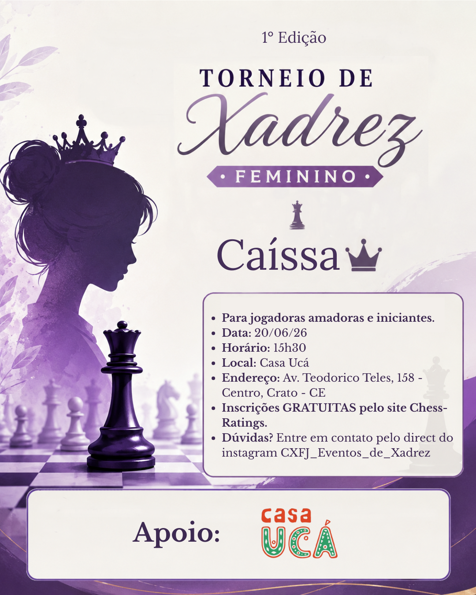

Caíssa
20 de junho de 2026
Um dos primeiros torneios da história do Clube de Xadrez Francisco Junio, marcando o início de uma nova etapa para o CXFJ.
Nosso mundo é aqui.
O Clube de Xadrez Francisco Junio nasceu de uma ideia simples: criar, aqui, experiências de xadrez que muitas vezes parecem existir apenas longe daqui.
O CXFJ busca oferecer aos jogadores um ambiente cada vez mais profissional, com seus torneios trazendo equipamentos escolhidos com cuidado.
Ainda estamos construindo esse mundo. Cada evento, cada projeto e cada novo equipamento é parte desse caminho.
Conheça os torneios que fazem parte da história do CXFJ.
Cada torneio realizado pelo Clube de Xadrez Francisco Junio possui seu próprio espaço. Aqui ficam registrados os eventos que já fizeram parte da nossa história.

Um dos primeiros torneios da história do Clube de Xadrez Francisco Junio, marcando o início de uma nova etapa para o CXFJ.
O que está por vir no CXFJ.
Acompanhe os próximos torneios e eventos do Clube de Xadrez Francisco Junio. Quando as inscrições estiverem abertas, o acesso estará disponível aqui.
Torneio do Clube de Xadrez Francisco Junio. Uma nova edição da história dos eventos do CXFJ.
Um torneio dedicado às jogadoras e à valorização da presença feminina no xadrez.
Evento realizado em parceria com o Colégio Pequeno Príncipe, levando o xadrez para novos espaços e novos jogadores.
Liga feminina online organizada pelo CXFJ, criada para reunir jogadoras e fortalecer a prática do xadrez feminino.
O xadrez também pode ocupar novos espaços.
Além dos torneios, o Clube de Xadrez Francisco Junio pode receber diferentes formatos de eventos, presenciais e online, sempre com o objetivo de reunir pessoas para praticar xadrez.
Simultâneas, encontros, parcerias e novas formas de viver o jogo fazem parte do futuro do CXFJ.
Registros dos eventos do CXFJ.
Alguns registros podem aparecer aqui no site. Os álbuns completos de cada evento serão disponibilizados em pastas compartilhadas.
Vamos conversar sobre xadrez e projetos.
Acompanhe os eventos, torneios e novidades do Clube de Xadrez Francisco Junio.
INSTAGRAM DO CXFJ